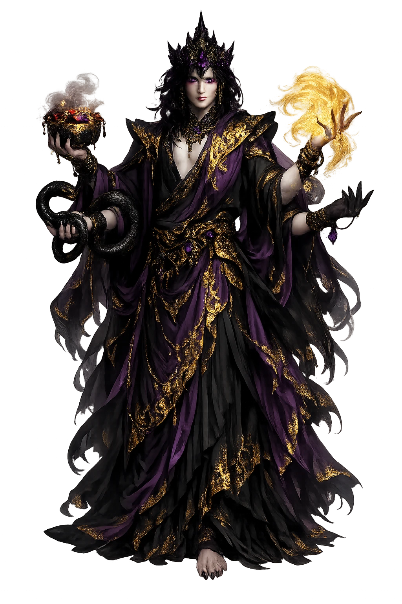
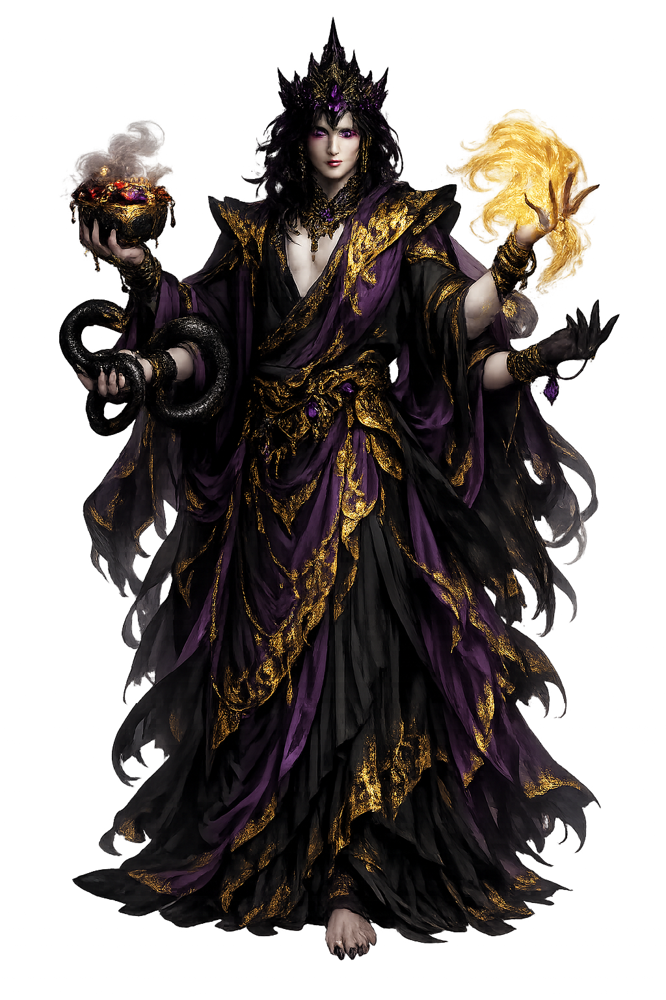

The Authentic Orthography
Death, Temptation, Illusion · The Tempter · Lord of Death

Unicode restoration and ASCII comparison
मार
The name in its original Buddhist form. Māra (मार) is attested in the source tradition — “‘death, the tempter’, the personification of death and desire who assailed the Buddha under the Bodhi tree (from √mṛ ‘to die’), MW.”. Its macron-length vowels carry the full phonetic and orthographic weight of the source tradition.
mara
Reduced to plain mara, the name loses everything that made it specific: macron-length vowels. What remains is an ASCII string that machines can parse but that no longer speaks with its original voice.
Māra
The Unicode restoration recovers what ASCII flattened. Māra restores macron-length vowels, returning the name to its original written dignity. The domain encodes to Punycode, but the browser displays the truth.
Māra.com → xn--mra-1oa.com
The non-ASCII characters in Māra are encoded while the ASCII remains visible. To the DNS, it is Punycode. To humanity, it is Māra.
How Māra travels from ancient script to the modern URL
Owned, ideal, and ASCII forms of Māra
Māra
Restores मार. The live temple domain — māra.com.
mara
Flattens मार. The plain ASCII fallback — what DNS and legacy systems see.
How Māra was spoken
The Ten Armies, the Three Daughters, and the Defeat of Being Seen
Māra is Death wearing every disguise the mind can manufacture: the lord of the desire-realm who marched his ten armies against the Buddha under the Bodhi tree, sent his three daughters when the armies broke, and lost — not to a weapon, but to being recognized.
Lust, discontent, hunger, craving, sloth, fear, doubt, obstinacy, glory, and self-praise — the Sutta Nipāta's catalog.
Taṇhā, Aratī, Rāgā: Craving, Aversion, Passion — the last seduction, sent when the army fled.
His war-elephant, Mountain-high — which knelt, the commentaries say, when the earth itself bore witness.
Borrowed from Kāma, the love-god: the weapons of desire — beautiful, flowered, and aimed.
Stories of Māra
Māra's mythology is the dark half of the Buddhist biography: wherever the teaching advances, the texts station him at the next bend — and his defeats chart the whole path from striving to parinibbāna.
The Sutta Nipāta's Padhāna Sutta gives his order of battle, and it is a psychology textbook in disguise: sensual pleasure is his first army, discontent the second, hunger and thirst the third, craving the fourth, sloth and torpor the fifth, fear the sixth, doubt the seventh, hypocrisy and obstinacy the eighth, gains, fame, and honor the ninth, and the tenth is self-exaltation joined with contempt for others. The Buddha's answer is the template of every later victory: he sees each army for what it is. The tradition's whole art of temptation is this catalog — and its whole defense is recognition.
The full assault is told in the Nidānakathā and versified in Aśvaghoṣa's Buddhacarita, whose canto on the Defeat of Māra is Sanskrit poetry's great set-piece: whirlwinds that cannot stir his robe, a rain of rocks that falls as flowers, darkness that will not spread. Mounted on the elephant Girimekhala, Māra advances his final claim — the seat of awakening is his — and calls his army as witness. The bodhisattva answers with the gesture that defines Buddhist art: he touches the earth, and the earth itself thunders witness to his perfections. The elephant kneels; the army scatters; the dawn comes up on an undefeated man.
Force having failed, Māra sent subtlety: his three daughters, Taṇhā (Craving), Aratī (Aversion), and Rāgā (Passion), came to the newly-awakened Buddha in every guise of beauty and made their offer. He saw through each in turn, and dismissed them with the calm of a man reading names off a list. The Saṃyutta Nikāya's Māra cycle ends nearly every one of these duels the same way — with the Tempter's signature lament: "The Blessed One knows me; the Fortunate One knows me." It is the most repeated sentence of defeat in any scripture: to be seen is to be beaten.
Māra keeps one appointment to the end. In the Mahāparinibbāna Sutta he comes to the aged Buddha and, with perfect courtesy, reminds him of his ancient promise: that he would not pass away until the four assemblies — monks, nuns, laymen, laywomen — were well established. That work is done now; it is time for the Blessed One's parinibbāna. And the Buddha, who once broke his army by seeing him, grants the request without resistance: in three months the Tathāgata will pass away. The tradition's point is exact — the tempter's last success is only the world's impermanence keeping its schedule.
Māra is the only adversary who is defeated exclusively by being identified. No sūtra has the Buddha out-argue him, out-pray him, or out-fight him: he is seen, and he is finished — "I see you, Māra" — and his own epitaph is "the Blessed One knows me." Every craving, every fear, every vanity keeps his treaty: unnamed, it commands; named, it kneels like Girimekhala. The tradition offers no other weapon because none has ever been needed.
Enter Extended Lore